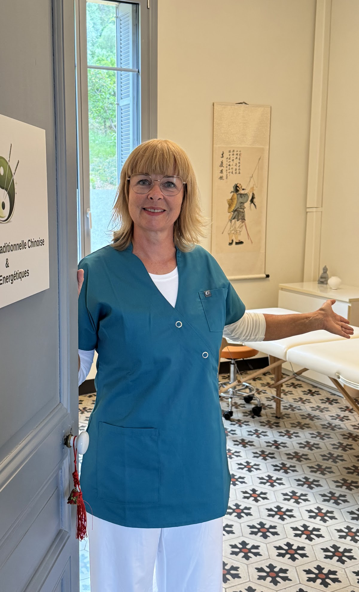
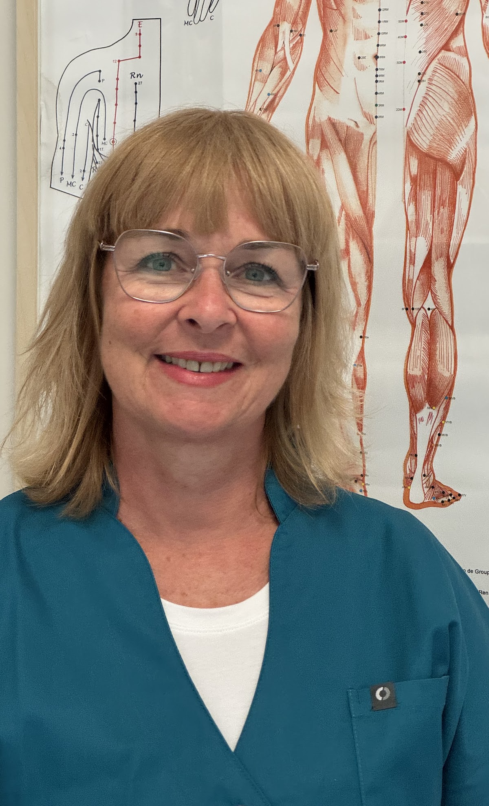
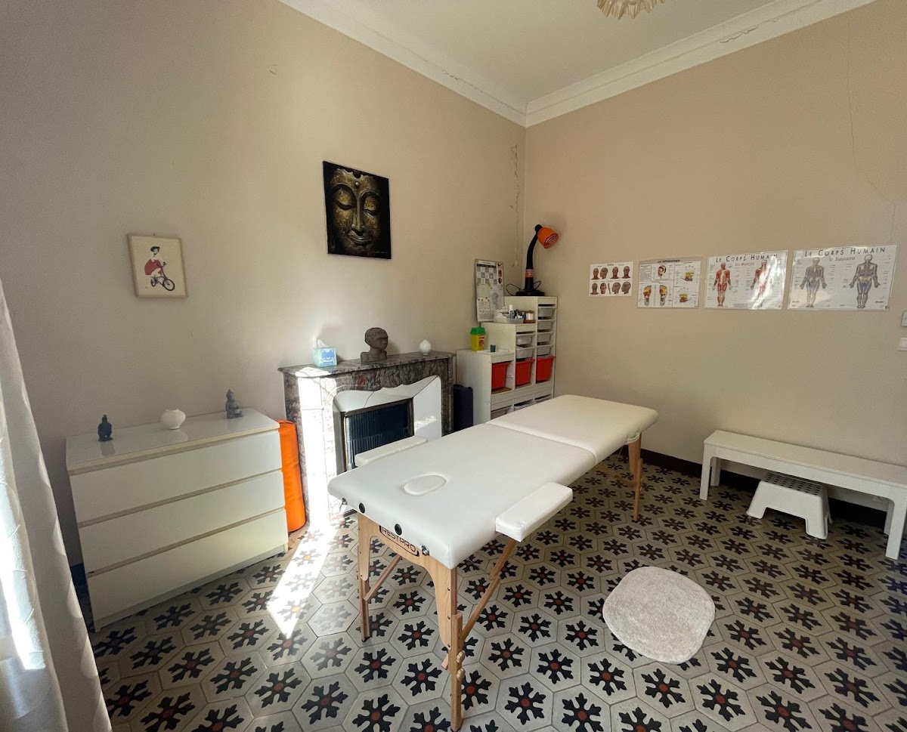
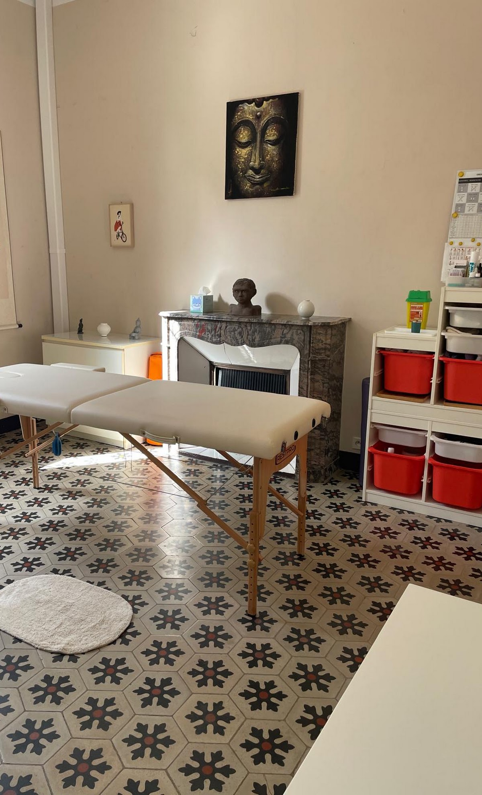
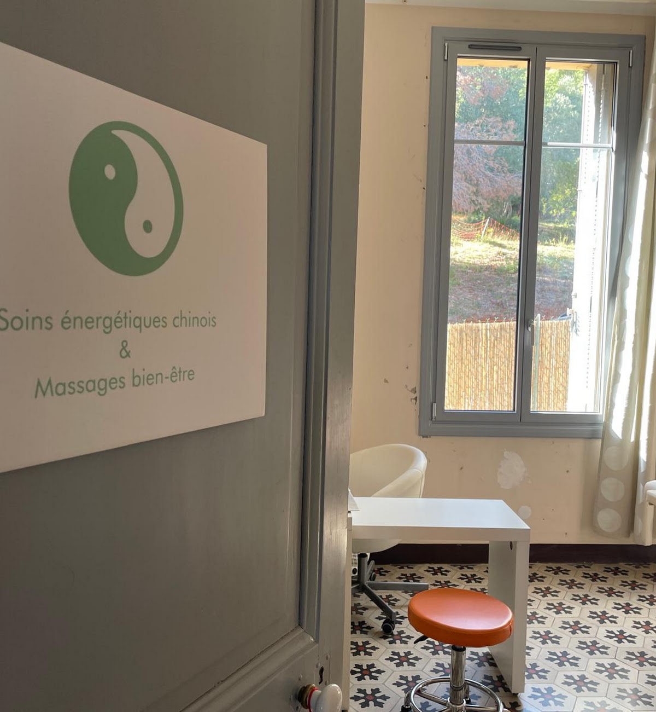
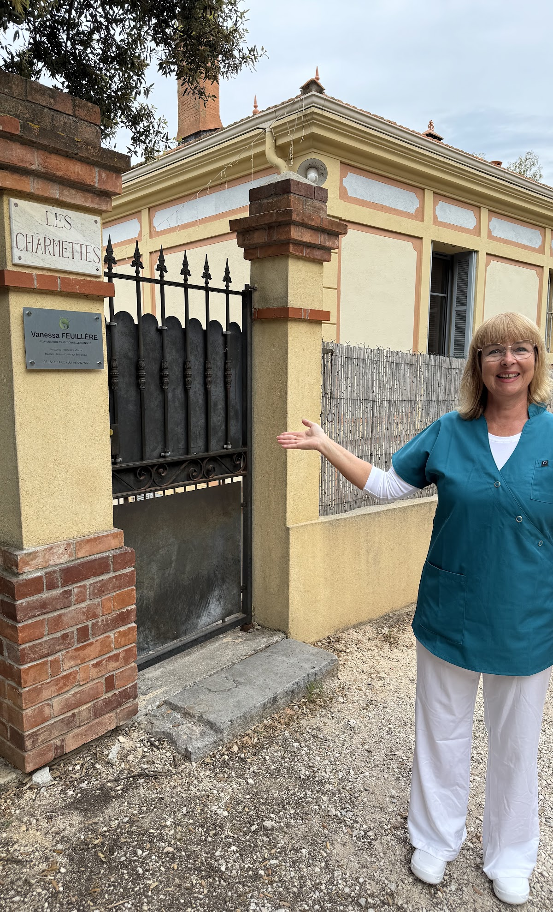

Cabinet de Médecine Traditionnelle Chinoise à Hyères proposant un accompagnement personnalisé, global et préventif pour restaurer et maintenir la vitalité des femmes et hommes, enfants (dès 7 ans) et seniors et des sportifs.


« Pour restaurer et maintenir l'harmonie intérieure face aux déséquilibres du quotidien. »
Praticienne passionnée, mon objectif est de proposer un accompagnement global et individualisé. J'interviens dans une démarche tant curative que préventive (équilibrages énergétiques à chaque changement de saison).
J'accompagne les enfants, femmes, hommes, seniors et sportifs confrontés à diverses problématiques :
Ingénieure en électricité de formation, j'ai travaillé près de vingt ans dans l'industrie, en France et pendant six ans à New York. Mes expatriations, notamment à Madrid et en Corée du Sud, m'ont fait découvrir d'autres approches de la santé et ont profondément enrichi ma vision du soin.
Attirée par les bienfaits de l'acupuncture, je me suis formée à la Médecine Traditionnelle Chinoise à Aix-en-Provence, en acupuncture et massage thérapeutique Tuina. J'ai complété ce parcours par des stages en France, en Corée du Sud et en Indonésie.
J'ai ouvert mon premier cabinet à Hyères en 2020, puis exercé à Séoul de 2022 à 2024 auprès d'une patientèle internationale. Depuis septembre 2024, je vous accueille de nouveau à Hyères.
Aujourd'hui, je vous propose une approche fondée sur la rigueur, l'écoute et une prise en charge personnalisée, pour vous accompagner vers un mieux-être durable.
Massage Face Cupping — Formabelle, Montpellier
Diététique Chinoise, l'alimentation des 5 éléments — Nina Volt
Gynécologie Chinoise : Physiologie et thérapeutique des règles — Philippe Sionneau
Natural Acupuncture — Ecan International School, Bali — David Lujan
Yamamoto New Scalp Acupuncture (YNSA) — PNIMA, Aix-en-Provence
Praticienne en Acupuncture et Tui Na thérapeutique — École de Médecine Traditionnelle Chinoise Zhong Li, Aix-en-Provence
Réflexologie Plantaire Chinoise — À Fleur de Peau, Marseille
Praticienne en Tui Nà bien-être (massage énergétique chinois) — Zhong Li, Aix-en-Provence
Praticienne en massage bien-être californien — Ling Dao, Le Pradet
Trois grandes familles de soins, entièrement personnalisées selon votre profil sont proposées au cabinet. Cliquez sur une prestation pour en découvrir le détail.

Après un bilan énergétique complet, la séance associe selon vos besoins acupuncture, ventouses, moxibustion, auriculothérapie, réflexologie plantaire, électroponcture et huiles essentielles.
En savoir plus
Séances préventives à chaque changement de saison pour préparer le corps aux énergies à venir, renforcer le système immunitaire et entretenir la vitalité tout au long de l'année.
En savoir plus
Chinois Tui Na, californien, réflexologie plantaire ou face cupping (nouveau) : une heure ou une heure trente de détente profonde, dans un cadre calme et chaleureux.
En savoir plusChaque consultation dure environ 1 heure (un peu plus lors d'une 1ère séance) et est construite sur mesure selon votre état et vos besoins du moment.
La séance débute toujours par un temps d'échange approfondi afin de clarifier vos symptômes et attentes. Votre historique de santé, vos habitudes de vie, votre sommeil et votre état émotionnel sont également pris en considération ainsi que l'observation de la langue et la prise des pouls.
A l'issue du bilan énergétique, la solution therapeutique identifiée est expliquée. Elle fait habituellement appel à une combinaison de plusieurs outilsde la MTC (acupuncture, ventouses, auriculothérapie, moxibustion ou Tuina). Les aiguilles sont stériles, à usage unique et indolores à la pose.
La séance se termine par des recommandations d'hygiène de vie (diététique, mouvement) et d'auriculothérapie fin de prolonger les effets de la séance.
Un espace calme et lumineux au sein de la bastide « Les Charmettes », à Hyères, entièrement dédié à votre bien-être.

5.0 / 5 — 13 avis sur la fiche Google du cabinet.
Le cabinet est situé à Hyères et vous accueille sur rendez-vous uniquement.
647 chemin de la Vertaubanne
83400 Hyères, France

Téléphone : 06 15 95 14 82
E-mail : acupuncture.vanessa@gmail.com
Choisissez votre prestation, votre date et votre créneau horaire sur la page de réservation : Vanessa vous recontacte rapidement pour confirmer votre rendez-vous.
Ou par téléphone : 06 15 95 14 82
| Lundi | 14:00 — 19:00 |
| Mardi | 09:00 — 19:00 |
| Mercredi | 14:00 — 18:00 |
| Jeudi | 09:00 — 19:00 |
| Vendredi | 09:00 — 12:00 |
| Samedi | Fermé |
| Dimanche | Fermé |
Horaires à jour sur la fiche Google du cabinet.